Originile hunilor
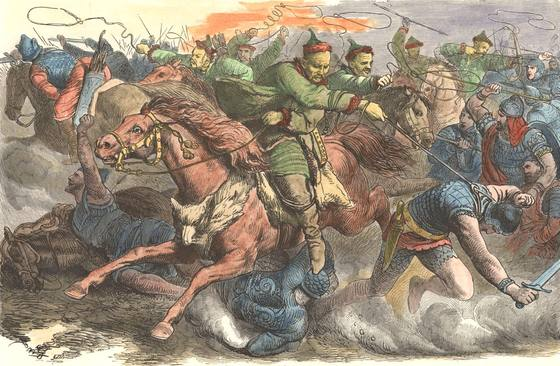
În literatura antică, cel mai vechi nume care seamănă cu „huni” apare la geograful grec Ptolemeu, care, la mijlocul secolului al II-lea d.Hr., așază o populație numită „Khounoi” între bastarni și roxolani1, în zona de stepă și pădure a Ucrainei de azi. Aproximativ 240 de ani mai târziu, Ammianus Marcellinus descrie un popor al hunilor dincolo de mlaștinile Meotide (Marea Azov), spre „oceanul înghețat”2, adică într-un loc diferit și mult mai vag. Asemănarea numelor a dus la ipoteza că ar fi același popor. Identificarea rămâne incertă.
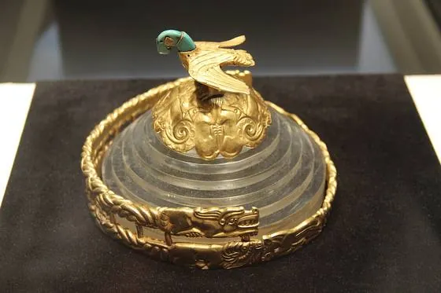
Teoria legăturii cu Xiongnu
De la mijlocul secolului al XVIII-lea3, hunii europeni au fost asociați cu Xiongnu, confederația de călăreți care a terorizat China antică și împotriva căreia s-a ridicat Marele Zid. Asemănarea celor două nume a alimentat teoria, iar o scrisoare sogdiană redactată în jurul anului 313, care descrie distrugerea orașului Luoyang din 311 de către niște „Huni”, pare, la prima vedere, să o confirme4.
Arheologia lasă deschisă întrebarea despre traseul și amploarea deplasărilor spre vest5. În 2025, Gnecchi-Ruscone și colegii au identificat segmente de ADN moștenite în comun între câțiva indivizi din elita Xiongnu și unii indivizi îngropați în Bazinul Carpatic în secolele V–VI6. Eșantioanele din Bazinul Carpatic arată ascendențe diverse. Studiul a identificat câteva legături genealogice cu elita Xiongnu târzie. Originea conducătorilor huni cunoscuți din texte și continuitatea politică rămân întrebări deschise.
Ce spun sursele bizantine
Iordanes îi atribuie lui Priscus informația despre o așezare a hunilor dincolo de Meotida (Marea Azov). În secolul al VI-lea, Procopius descrie grupuri hunice lângă Meotida, iar Agathias consemnează tradiții despre trecerea lor. Pasajele luminează prezența hunilor în regiunea pontică și lasă deschisă problema originii lor mai îndepărtate7.
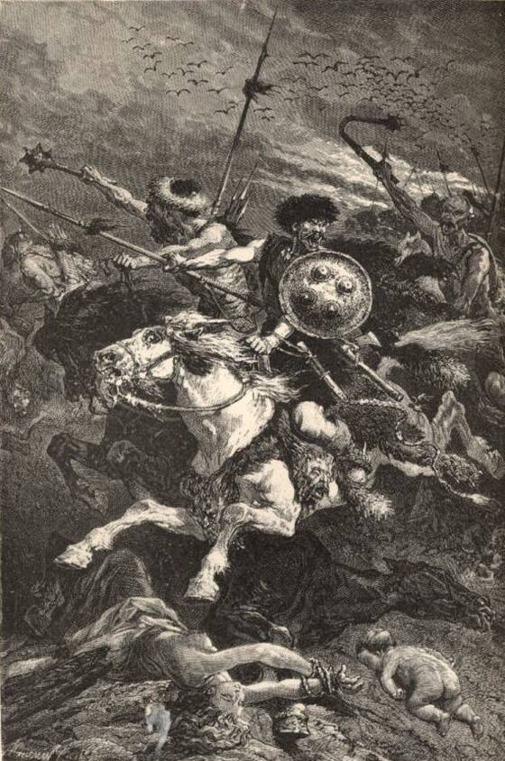
Viața nomadă și arta războiului
Cea mai vie descriere a vieții hunilor o lasă Ammianus Marcellinus. El vorbește despre un popor fără așezări fixe sau agricultură, care își petrece existența călare, se hrănește cu rădăcini sălbatice și carne pe care, după autor, o încălzeau între coapse și spatele calului, și își poartă familiile în care acoperite8.
Atenție la sursă. Ammianus nu spune că i-a întâlnit pe huni. Îi descrie prin tipare romane despre popoarele din afara imperiului, așa că detaliile despre hrană și viața călare trebuie citite în acest context. Arheologia oferă alte tipuri de dovezi, cum ar fi piese de arc, cazane și morminte cu echipament de călărie.
Avantajul lor în luptă venea din arcul recurbat compozit, construit din lemn, os și tendoane, și din tragerea partă, adică arcașul călare putea ochi și trage înapoi în plină retragere. Combinate cu tactica retragerii false, care atrăgea inamicul într-o urmărire dezordonată, aceste elemente transformau fiecare ciocnire într-o ambuscadă potențială.
Socotind că nu se cuvine să coboare de pe cai, barbarii au ținut sfatul călare; iar romanii, ca să nu se arate mai prejos, au vorbit și ei tot din șa.
Izvoarele, față în față
Tabelul compară câteva exemple de izvoare scrise, descoperiri arheologice și cercetări genetice. Fiecare răspunde la alte întrebări despre huni.
| Sursa | Ammianus MarcellinusRes Gestae, cartea 31 · c. 390 | Priscus din PaniumIstorie, păstrată în fragmente · după 472 | IordanesGetica · 551 | Arheologiamorminte, cazane, diademe, arcuri · sec. IV–V | Genetica (ADN antic)Neparáczki 2019, Maróti 2022, Gnecchi-Ruscone 2025 |
|---|---|---|---|---|---|
| Distanța în timp | ~15 ani după | din epocă | ~100 de ani după | din epocă | cercetare modernă |
| Tipul sursei | Contemporan al evenimentelor, fără o întâlnire consemnată | Martor ocular: în solia din 449 | Nu a fost martor; rezumă autori mai vechi | Obiecte din epocă | Analiză modernă pe schelete din epocă |
| Ce aflăm | Cea mai veche descriere amănunțită a hunilor și a șocului din 375–378. | Curtea lui Attila văzută din interior: ospățul, diplomația, tributul. | Câmpiile Catalaunice, moartea lui Attila, bătălia de la Nedao. | Ce purtau, ce foloseau și cât de departe ajungea moda elitelor din lumea hunică. | Ascendențe diverse și legături genealogice între câțiva indivizi din Bazinul Carpatic și membri ai elitei Xiongnu. |
| Limite | Folosește tipare vechi despre „barbari”: imaginea e literară, nu observație de teren. | Avem doar fragmente copiate de alții; privește lumea hunică cu ochi de diplomat bizantin. | Scrie o istorie a goților, la un secol distanță, și are interesul să-i pună în lumină. | Obiectele nu spun etnia: aceeași diademă putea fi purtată de un hun, un got sau un alan. | Eșantioanele descriu indivizii analizați. Identitatea, rangul și continuitatea politică se cercetează și cu alte izvoare. |
Distanța e socotită față de evenimentele descrise (375–378 pentru Ammianus, 451–454 pentru Iordanes). Edițiile și studiile sunt în bibliografia de la final.
Cronologie interactivă
Trage de-a lungul liniei sau apasă pe o epocă. Harta arată unde s-a petrecut fiecare eveniment și până unde ajunseseră hunii în acel an; alături afli ce s-a întâmplat. Poți apăsa și direct pe punctele de pe hartă.
Surse pentru evenimentele din cronologie: moartea lui Ermanaric9, trecerea Dunării de către vizigoți10, Câmpiile Catalaunice și solia la curtea lui Attila11.
Marea Migrație
Efectul de domino și prețul păcii, plătit în aur
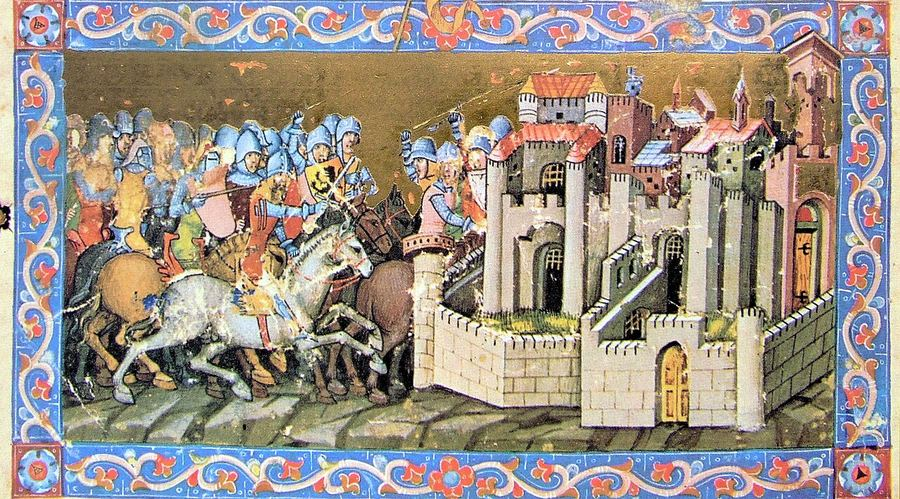
Șocul de la 375 nu s-a oprit la alani și ostrogoți. Popoarele împinse de huni s-au izbit unele de altele și, în cele din urmă, de granițele Romei. O parte dintre istoricii moderni numesc acest efect de domino Marea Migrație a Popoarelor12. Nu toți sunt de acord. Istorici precum Guy Halsall și Walter Goffart contestă explicația, argumentând că slăbiciunile interne ale Imperiului au contat cel puțin la fel de mult ca presiunea venită din stepă.
Granița de pe Dunăre și Rin, limes-ul roman, nu mai putea fi închisă. După dezastrul de la Adrianopol (378), împăratul Teodosie I îi așază pe goți în Imperiu, în 382, ca foederati: aliați legați printr-un tratat, care primeau pământ și luptau pentru Roma sub propriii conducători.
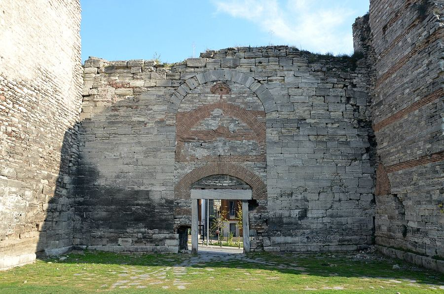

Mecanismul efectului de domino
Presiunea a venit din trei direcții, una după alta:
- Spre Bazinul Carpatic: hunii se și așază aici. Din anii 420–430, centrul lor de putere se mută în Câmpia Panonică, la nord de Dunăre, de unde controlează un areal ce înglobează foste teritorii germanice și sarmatice.
- Spre Balcani, împotriva Răsăritului: campaniile din 441–447 lovesc direct Imperiul Roman de Răsărit, devastând provinciile dunărene până aproape de zidurile Constantinopolului și impunând tributul care avea să ajungă la 2.100 de livre de aur.
- Spre Apus, în 451–452: marea campanie a lui Attila în Galia (oprită la Câmpiile Catalaunice) și invazia Italiei din anul următor, ultimele două lovituri directe date de huni Imperiului, înainte de prăbușirea rapidă a hegemoniei lor.
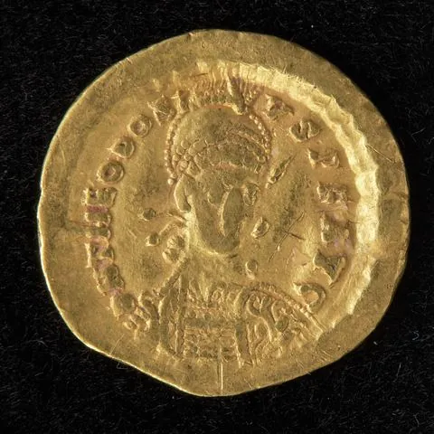

De ce plătea Constantinopolul aur?
Un popor fără orașe și fără monede proprii a primit, an de an, sute de kilograme de aur de la Imperiul Roman de Răsărit. Urmărește anii de mai sus ca să vezi cum a crescut prețul păcii.
c. 422–430
350 de livre pe an
Sub regele Rua, hunii primesc 350 de livre de aur în fiecare an. Pentru Constantinopol, e prețul liniștii la Dunăre.
anii 430
Dublu: 700 de livre
La Margus, Attila și Bleda obțin dublarea tributului și deschiderea târgurilor de la graniță.
443 sau 447
Triplu: 2.100 de livre, plus 6.000 restanță
Potrivit lui Priscus, tratatul negociat de Anatolius după luptele din Chersonesul Tracic triplează tributul. Restanța trebuie plătită pe loc: senatorii își vând mobila și bijuteriile soțiilor, scrie Priscus.
450
Plata se oprește
Noul împărat, Marcian, refuză tributul. Attila nu se mai întoarce spre Balcani: în 451 pornește spre Galia. Aurul a cumpărat timp pentru Răsărit, iar nota de plată a ajuns în Apus.
în fiecare an
Peste 151.000 de monede
O livră romană avea 72 de solizi. Cele 2.100 de livre însemnau 151.200 de monede de aur, adică aproape 690 kg de aur pe an.
Cifrele: Priscus, fr. 2 și 5 (numerotarea Müller). Pentru cronologie, vezi Hakenbeck și Büntgen, tabelul 1. Livra romană ≈ 327 g.
Orașul care a cucerit lumea întreagă a fost cucerit el însuși.
Traseele vizigoților, ostrogoților, vandalilor și hunilor, an cu an: vezi Atlasul →
Surse pentru traseele de pe hartă: trecerea Dunării de către vizigoți13 și trecerea Rinului, consemnată de Prosper pentru vandali și alani14.
Atlasul migrației hunice
Harta urmărește trasee reconstituite de la expansiunea hunilor (în jur de 370) până la jefuirea Romei de către vandali (455). Ammianus atestă atacul asupra alanilor din zona Donului. Trage cronologia: traseele se desenează an cu an, iar zona colorată arată cât de departe ajunsese puterea hunilor. Apasă pe orice oraș sau bătălie pentru sursa istorică.
← glisează harta →
Hartă de bază: Europe relief laea location map, Alexrk2, Wikimedia Commons, CC BY-SA 3.0. Traseele, zonele și marcajele sunt adăugate peste ea.
Personalități & impact
Attila și Aetius: două fețe ale aceluiași conflict
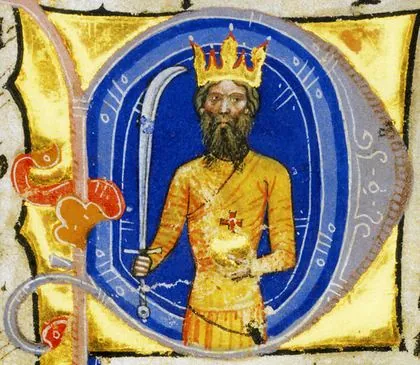
Regele hunilor
Attila
„Flagellum Dei”, Biciul lui Dumnezeu15
Fapte-cheie
- Conduce imperiul hunic singur din 445 d.Hr., după înlăturarea fratelui său, Bleda.
- Devastează Balcanii (441–447) și obține tribut anual uriaș de la Constantinopol.
- Invadează Galia (451) și Italia (452); moare în 453, în noaptea nunții cu Ildico.
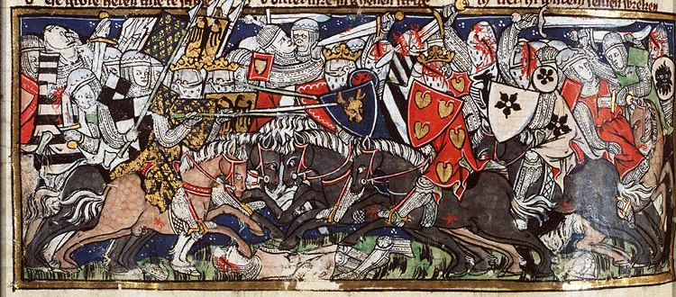
Generalul roman
Flavius Aetius
„Ultimul dintre romani”16
Fapte-cheie
- În tinerețe a fost ostatic la curtea hunilor, așa că știa lumea hunică din interior, un avantaj rar printre romanii vremii.
- Formează, în 451, coaliția care îl oprește pe Attila la Câmpiile Catalaunice, cu romani, vizigoți, franci, burgunzi și alani.
- Este ucis chiar de împăratul Valentinian III, în 454, la trei ani după victoria sa cea mai mare.
viața domnia lui Attila (434–453)
O luptă cumplită, schimbătoare, crudă și îndârjită, cum n-a mai povestit nimeni din vechime.
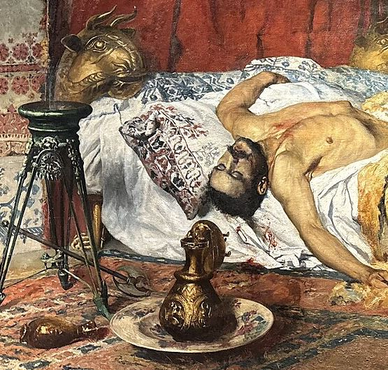
La Câmpiile Catalaunice, ostrogoții, vasali ai lui Attila, au luptat de partea hunilor, în timp ce vizigoții, cei dintâi fugari din calea acestora, s-au aliat cu Roma pentru a-i opri17. Attila moare în 453. În jurul anului 454, la Nedao, răscoala popoarelor supuse înfrânge fiii lui Attila și destramă hegemonia hunică. Sfârșitul nu e imediat. Dengizich, unul dintre fiii lui Attila, mai luptă cu Bizanțul până în 46918.
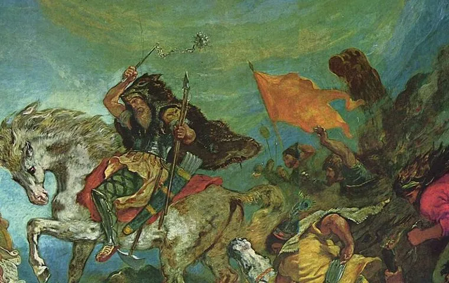
Consecințe de lungă durată
476 d.Hr.
La doar 23 de ani după moartea lui Attila, ultimul împărat al Romei de Apus este detronat. E data convențională a căderii Imperiului Roman de Apus.
493 d.Hr.
Ostrogoții, eliberați de sub tutela hunică, întemeiază sub Teodoric cel Mare un regat propriu în Italia.
c. 500 d.Hr.
Vandalii în Africa de Nord, vizigoții în Hispania, francii în ascensiune în Galia; harta etnică a Europei occidentale e complet redesenată.
Peste secole
Marea Migrație marchează, pentru istoriografia modernă, tranziția simbolică de la Antichitate la Evul Mediu timpuriu.
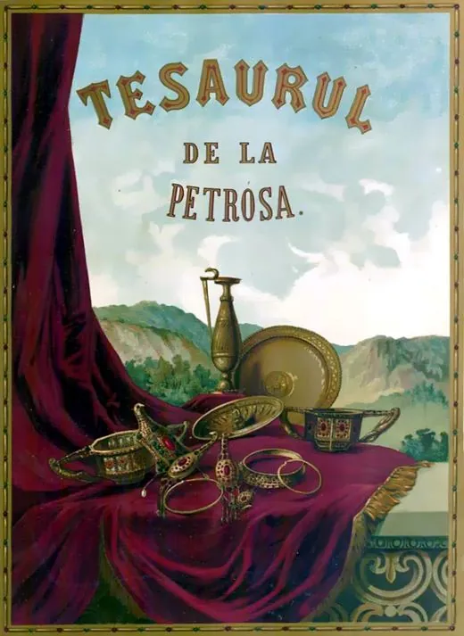
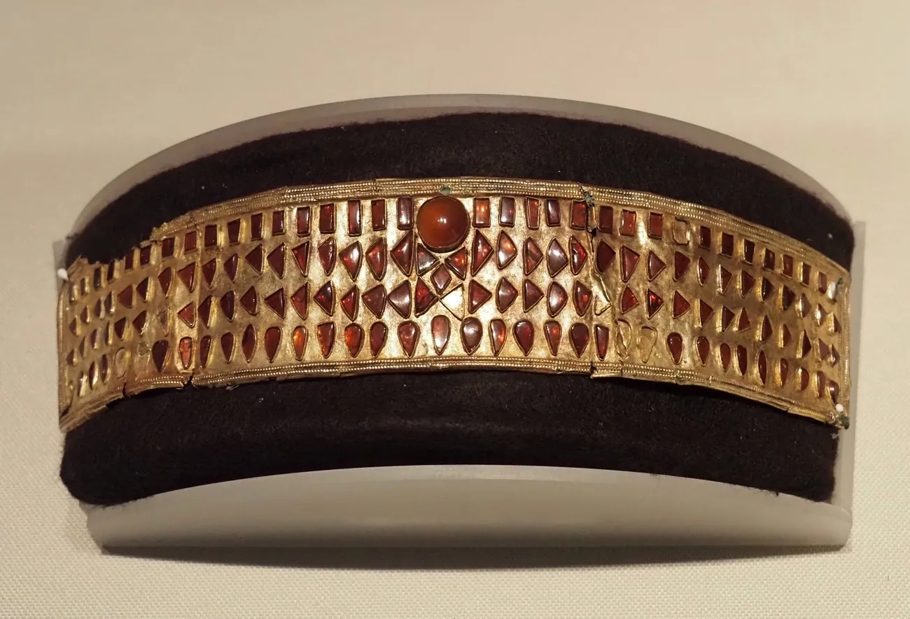
Ecoul în spațiul carpato-danubiano-pontic
Campaniile lui Uldin și Attila lovesc cetăți romane de la sud de Dunăre. În 408, Uldin cucerește Castra Martis (Dacia Ripensis), identificată tradițional cu Kula, în Bulgaria19. Campaniile din anii 440 lovesc Viminacium și Naissus (Niš), ambele în Serbia de azi.
La nord de Dunăre, descoperirile din România de azi documentează legăturile cu lumea romană și cu elitele epocii hunice. Aur roman ajuns dincolo de graniță a fost descoperit la Dolhești (Moldova), iar la Șimleul Silvaniei (Transilvania) au apărut două tezaure spectaculoase, alcătuite în principal din medalioane imperiale de aur și podoabe, atribuite unei elite din epoca migrațiilor din secolele IV–V20. Cazane hunice de bronz au fost semnalate și pe teritoriul României21, obiecte cunoscute și în alte părți ale Bazinului Carpatic. Cea mai celebră piesă a epocii, tezaurul de la Pietroasa („Cloșca cu puii de aur”), a fost atribuit unei elite gotice22. Îl pomenim aici pentru că a fost probabil îngropat de o elită germanică sub presiunea evenimentelor declanșate de sosirea hunilor.
Cea mai grăitoare piesă descoperită pe teritoriul României este însă diadema de la Gherăseni (județul Buzău), expusă și explorabilă în detaliu în modulul Muzeul virtual al acestui site. Găsită în 1965 la Grindul Cremenea, într-un mormânt de înhumație din prima jumătate a secolului al V-lea, are o bandă de aur împodobită cu granate roșii, în stilul policrom al epocii. Analiza antropologică a arătat că scheletul aparținea unei femei cu craniul deformat artificial, o practică documentată și în alte cimitire ale epocii. Piesa face parte din patrimoniul Muzeului Județean Buzău și are analogii în stepa eurasiatică și în Europa Centrală23.
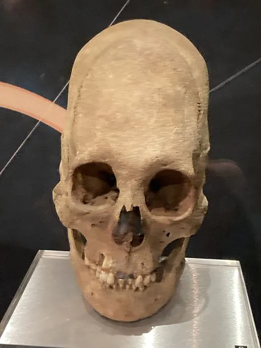
Ce se spune
„Sosirea hunilor a însemnat o înlocuire totală a populației din Bazinul Carpatic”
O precizare necesară
Prezența unor obiecte „hunice” într-un mormânt nu dovedește că cel îngropat era hun. În secolul al V-lea, stilul policrom cu granate, cazanele de bronz și chiar deformarea craniană circulau între popoare ca modă a elitelor. Ele arată apartenența la o lume politică dominată de huni, nu neapărat originea etnică a purtătorului, iar „prințesa” de la Gherăseni e un exemplu bun tocmai fiindcă originea ei etnică rămâne deschisă.
Multe eșantioane genetice din perioada hunică arată ascendență predominant locală/europeană. Datele sugerează o elită conducătoare relativ redusă numeric, care domina politic populații majoritar autohtone, nu o înlocuire demografică completă.
Sursa: Maróti et al. 2022 (nota 6)
Muzeul Hunilor
Opt fișe despre epoca hunilor, cu fotografii ale pieselor din colecții muzeale și ale unui arc reconstituit.
Apasă pe punctele roșii pentru detalii.